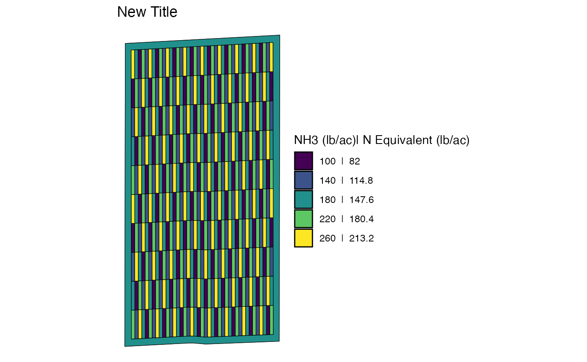

Modify trial design maps or make them from scratch
Source:vignettes/articles/V7-visualize-from-scratch.Rmd
V7-visualize-from-scratch.RmdBy default, viz() uses the Greens palette,
but you may want to change the color scheme. Or you may want to change
some other parts of the maps. You can do this realtively easily with
knowledge of ggplot2 package.
Let’s create a trial design first.
#--- packages ---#
library(ofpetrial)
library(ggplot2)
n_plot_info <-
prep_plot(
input_name = "NH3",
unit_system = "imperial",
machine_width = 30,
section_num = 1,
harvester_width = 30,
plot_width = 30
)
exp_data <-
make_exp_plots(
input_plot_info = n_plot_info,
boundary_data = system.file("extdata", "boundary-simple1.shp", package = "ofpetrial"),
abline_data = system.file("extdata", "ab-line-simple1.shp", package = "ofpetrial"),
abline_type = "free"
)
n_rate_info <-
prep_rate(
plot_info = n_plot_info,
gc_rate = 180,
unit = "lb",
rates = c(100, 140, 180, 220, 260),
design_type = "ls",
rank_seq_ws = c(5, 4, 3, 2, 1)
)
td <- assign_rates(exp_data, rate_info = n_rate_info)
#--- create a map using viz() ---#
viz(td)Modify the map created by viz()
While running viz() displays a plot, you can save it to
a new object like below.
#--- save it to a new object ---#
viz_td <- viz(td)
#--- check its class ---#
class(viz_td)
#> [1] "gg" "ggplot"As you can see, it is a ggplot object. This means that
you can for example change the fill color scheme to viridis like below
(along with change the title):
viz_td +
scale_fill_viridis_d(name = "NH3 (lb/ac)| N Equivalent (lb/ac)") +
ggtitle("New Title")
Create a trial design map from scratch
The viz() uses trail design sf object
stored in td (trial design created using
assign_rates()), which is named trial_design.
You can access it like below:
#--- extract the trial design sf ---#
td_for_plot <- td$trial_design[[1]]
#--- check the class ---#
class(td_for_plot)
#> [1] "sf" "data.table" "data.frame"So, you can use the ggplot2 package (or other pacakges
like tmap) to create maps yourself.
This is not a ggplot2 guideline. So, we stop here. But,
it should be clear at this point that you can further modify the map to
your liking using ggplot2.